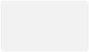

按住拍


显示摄像头拍摄内容

选择发视频贴功能，进入首先是“拍摄”
从视频库选择


需求说明
点击“叉”关闭发视频贴的界面，回到社区列表
功能：左边状态是闪光灯被关闭状态；右边是闪光灯被打开的状态；
交互：点击左边的按钮，变成右边的按钮，反之亦然；
功能：切换前后摄像头，默认是后置摄像头；
交互：点击切换前置摄像头，再点击切换后置摄像头，照此循环；
页面说明


拍摄时间记录轴，3秒起发，60秒为上限；
3秒
60秒
视频可以一截一截的拍摄，最多拍摄20截；
打开视频库，选择视频，只能选择一个；
按住拍
按住拍
未按下状态
按下状态
到60秒状态
3个按钮状态由设计安排
按住拍
功能：左箭头可以删除上一截的视频；
交互：点击“左箭头”，变成右边说明；
功能：点击左箭头选择上一截视频，上一截视频呈现选中状态，点击垃圾桶删除此截视频 ；
交互：点击“删除”删除此截视频，变成左边操作情况；
下一步

下一步
下一步
3秒后可点击“下一步”。进入“视频编辑页面”，在编辑页面提示用户“视频已保存到本地”
3秒内不可点击“下一步”
交互：没有拍摄则不展示，左箭头；

视频已保存至本地
拍摄的视频会在点击“下一步”后，提示此文案